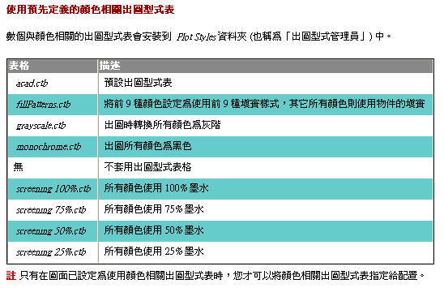

AutoCAD 的出圖是由 出圖型式表 來管理出圖的「筆寬」及「顏色」，
關於列印出圖成「黑白」的方式，提供以下方法給大家參考，有問題請再提出~
※※※ AutoCAD 方式 ※※※
出圖時出圖型式表請選擇 monochrome.ctb 即可。
說明:
acad.ctb ← 彩色出圖型式表
monochrome.ctb ← 黑白出圖型式表
https://2img.net/h/i143.photobucket.com/albums/r134/op90o/G0036a.gif
------------------------------------------------
當圖面使用顏色相關出圖型式表時，您無法將出圖型式指定給個別的物件或圖層。 而若要指定出圖型式性質至物件，您要變更物件或圖層的顏色。
您可以指定顏色相關出圖型式表至配置。 您可以使用數個事先定義的顏色相關出圖型式表，編輯既有的出圖型式表，或建立自己的出圖型式表。
顏色相關出圖型式表儲存於 Plot Styles 資料夾，並有 .ctb 副檔名。

資料來源:AutoCAD 2006 使用者說明